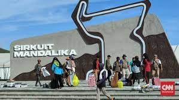

Sandiaga sebut MotoGP Mandalika jadi momentum pemulihan ekonomi
Praya, Lombok Tengah (ANTARA) - Menteri Pariwisata dan Ekonomi Kreatif (Menparekraf), Sandiaga Salahudin Uno, menyatakan perhelatan Pertamina Grand Prix of Indonesia yang digelar di Mandalika International Street Circuit harus menjadi kebangkitan sektor pariwisata dan ekonomi kreatif serta mendukung momentum pemulihan.
"MotoGP Mandalika 2022 harus memberikan dampak yang signifikan terhadap pertumbuhan ekonomi," kata Sandiaga Uno saat dikonfirmasi tim Media Center Indonesia (MCI) MotoGP Mandalika 2022, Sabtu.
Ia mengharapkan kehadiran dan dukungan Kementerian Pariwisata dan Ekonomi Kreatif dapat mendukung pemberdayaan pelaku usaha, khususnya pelaku usaha mikro, kecil, dan menengah (UMKM) lokal.
"Kita harus pastikan MotoGP ini membawa optimisme kebangkitan, dan kita terus rawat momentum dari kepulihan ekonomi kita," katanya.
Menurut dia, pemerintah telah menjalankan berbagai program dalam memberdayakan UMKM lokal, dengan memberikan pelatihan dan peningkatan kompetensi, sehingga dapat memperkuat daya tarik bagi wisatawan.
"Kita harus dapat menghadirkan produk-produk berkualitas yang tentunya bisa menjadi momentum kebangkitan ekonomi kita," katanya.
Dalam mempromosikan produk ekonomi kreatif, Kemenparekraf melalui Deputi Bidang Pemasaran juga mengadakan
produk ekonomi kreatif melalui “Planogram Goes to Mandalika” di tempat yang sama.
Melalui planogram ini, wisatawan dapat membeli produk-produk ekonomi kreatif dengan melakukan pindai pada
barcode yang tersedia di tiap produk.
"Terdapat 300 produk yang terdiri dari subsektor fesyen, kriya, dan kuliner dalam Planogram Goes to Mandalika," katanya.
MotoGP Indonesia merupakan seri kedua dari Kejuaraan Dunia 2022 setelah sebelumnya seri pertama berlangsung di Qatar pada awal Maret 2022. Di seri pertama, pembalap asal Italia dari tim Gresini Racing, Enea Bastianini berhasil meraih tempat pertama.
Gresini Racing juga merupakan tim balap yang berkolaborasi dengan Kemenparekraf untuk mempromosikan pariwisata dan ekonomi kreatif Indonesia, sehingga logo Wonderful Indonesia terpasang pada bagian sayap depan dari motor milik pembalap Ducati Gresini Racing.